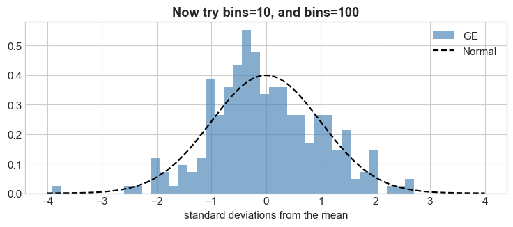
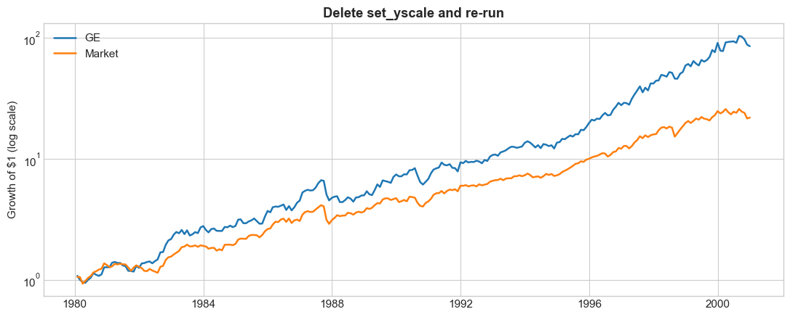
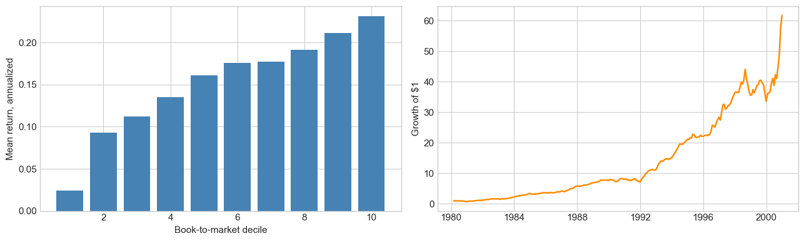

23. Python Companion#
The lectures use Python without stopping to explain it: class time goes to the finance, and the AI writes most of the code. This notebook is where the code gets explained.
It is not a Python course. It covers only what actually appears in the lecture notebooks, in the order it first appears, and every entry points back to where it was used. When a line in a lecture looks like magic, look it up here.
Each entry has three parts:
The line, exactly as it appears in class
What it does, piece by piece, usually on a table small enough to see all of
📍 Used in, the lecture and section, linked
Run the Setup cell first, then the entries in order — later entries use the data loaded by earlier ones. The code cells are short on purpose. Change something and re-run: that is the fastest way to find out what a line does.
23.1. 📋 Contents#
From The Workflow, and What a Return Is
From The Panel and Portfolio Mathematics
From Sorts, Breakpoints, and Long-Short Portfolios
23.2. 🛠️ Setup#
#@title Setup — run this first
import numpy as np
import pandas as pd
import matplotlib.pyplot as plt
%matplotlib inline
plt.style.use('seaborn-v0_8-whitegrid')
plt.rcParams['figure.figsize'] = [11, 4.5]
plt.rcParams['font.size'] = 11
import warnings; warnings.filterwarnings('ignore')
print("✅ Ready")
✅ Ready
23.3. From The Workflow, and What a Return Is#
23.3.1. 1. Libraries, and the Setup cell #
import numpy as np import pandas as pd import matplotlib.pyplot as plt
Python on its own knows arithmetic, text and lists. Almost everything else
comes from libraries — code other people wrote, which you load with
import. Three do nearly all the work in this course:
Library |
What it is for |
You will see |
|---|---|---|
|
numbers and arrays: square roots, weighted averages |
|
|
tables with labelled rows and columns |
|
|
figures |
|
as np is a nickname. Without it you would type numpy.sqrt(12) every time;
with it, np.sqrt(12). The nicknames np, pd and plt are universal —
every example online and everything the AI writes uses them.
The rest of the Setup cell is cosmetic:
%matplotlib inlineis not Python. It is a notebook command that puts each figure under the cell that made it.plt.style.use(...)andplt.rcParams[...]set how figures look by default.warnings.filterwarnings('ignore')hides warning messages. That keeps the output clean, and it also hides warnings you might have wanted. If something behaves strangely, delete that line and re-run.#@titleis a Colab label that names the cell and lets you collapse it. To Python it is a comment, like anything else after#.
📍 Used in: the Setup cell of every lecture, starting with The Workflow, and What a Return Is.
print(np.sqrt(12)) # numpy: a square root
print(pd.Series([0.10, -0.05, 0.02])) # pandas: a labelled column of numbers
3.4641016151377544
0 0.10
1 -0.05
2 0.02
dtype: float64
23.3.2. 2. Variables and f-strings #
STOCK = "AAPL" INVESTMENT = 1000 print(f"${INVESTMENT:,} in {STOCK} from {BIRTH_DATE} to {END_DATE}")
= stores a value under a name. "AAPL" in quotes is text (a string);
1000 without quotes is a number. The capital letters are a convention for
“settings you are meant to edit”, nothing more.
The f before the quotes makes an f-string: anything inside { } is
replaced by its value, and after a colon you can say how to format it. Nearly
every print in the course uses one. The codes worth knowing:
Code |
Does |
with |
|---|---|---|
|
as is |
|
|
2 decimals |
|
|
percent, 1 decimal |
|
|
always show the sign |
|
|
right-aligned in 9 characters |
|
|
thousands separator |
|
Dates have their own codes: {d:%Y-%m} gives 1995-06, {d:%B %Y} gives
June 1995.
📍 Used in: Live Demo, Step 1 — Specify, and every
print after it.
STOCK = "AAPL"
INVESTMENT = 1000
x = 0.08443
print(f"${INVESTMENT:,} in {STOCK}")
print(f"[{x}] [{x:.2f}] [{x:.1%}] [{x:+.2%}] [{x:>9.1%}]")
d = pd.Timestamp('1995-06-30')
print(f"{d:%Y-%m} {d:%B %Y}")
$1,000 in AAPL
[0.08443] [0.08] [8.4%] [+8.44%] [ 8.4%]
1995-06 June 1995
23.3.3. 3. Calling a function: yf.download, .iloc #
px = yf.download(STOCK, start=BIRTH_DATE, end=END_DATE, progress=False, auto_adjust=True)['Close'] tot = float(px.iloc[-1] / px.iloc[0]) - 1
A function takes inputs in parentheses and hands back a result. Inputs come in
two ways: by position — STOCK comes first, so yf.download knows it is
the ticker — and by keyword, like start=... and end=.... A keyword you
leave out takes a default value.
That default is what the Live Demo’s check cell is about. auto_adjust
decides whether the prices include dividends. If the AI’s code leaves it out,
you get whatever the library’s default happens to be. Two calls that differ in
one keyword give different answers, and both run without complaint.
['Close'] picks one column out of what came back. .iloc picks rows by
position: .iloc[0] is the first row, .iloc[-1] the last (negative
positions count from the end). So px.iloc[-1] / px.iloc[0] - 1 is last price
over first price, minus one: the return over the whole window. float(...)
turns the result into a plain number.
The check cell wraps all of this in try: … except Exception:. If anything
inside try fails — Yahoo is down, no internet — Python runs the except part
instead of stopping with an error.
📍 Used in: Live Demo, Step 2 — the 🔒 Check cell.
# four month-end prices, made up
px = pd.Series([100.0, 104.0, 98.0, 120.0],
index=pd.to_datetime(['2020-01-31', '2020-02-29', '2020-03-31', '2020-04-30']))
print(px, "\n")
print("first :", px.iloc[0])
print("last :", px.iloc[-1])
print(f"return: {px.iloc[-1] / px.iloc[0] - 1:.1%}")
2020-01-31 100.0
2020-02-29 104.0
2020-03-31 98.0
2020-04-30 120.0
dtype: float64
first : 100.0
last : 120.0
return: 20.0%
23.3.4. 4. Fama-French from the internet: web.DataReader #
import pandas_datareader.data as web ff = web.DataReader('F-F_Research_Data_Factors', 'famafrench', start='1980-01-01')[0]
pandas_datareader downloads data from public sources straight into pandas.
The source here is 'famafrench', Ken French’s data library, and the dataset
is his monthly factors — which include the risk-free rate RF and the
market’s excess return Mkt-RF.
What comes back is not one table but a dictionary of them: labelled boxes.
Box 0 holds the monthly table, box 1 the annual one, and 'DESCR' a text
description. The [0] at the end of the line opens box 0.
📍 Used in: Excess Returns and the Units Trap; again in The Panel and Portfolio Mathematics and its Challenge.
import pandas_datareader.data as web
raw = web.DataReader('F-F_Research_Data_Factors', 'famafrench', start='1980-01-01')
print(type(raw).__name__, "with keys", list(raw.keys()), "\n")
ff = raw[0] # box 0: the monthly table
ff.head(3)
dict with keys [0, 1, 'DESCR']
| Mkt-RF | SMB | HML | RF | |
|---|---|---|---|---|
| Date | ||||
| 1980-01 | 5.50 | 1.62 | 1.85 | 0.80 |
| 1980-02 | -1.23 | -1.86 | 0.59 | 0.89 |
| 1980-03 | -12.90 | -6.70 | -0.96 | 1.21 |
23.3.5. 5. Fixing the dates: to_timestamp and MonthEnd #
ff.index = pd.to_datetime(ff.index.to_timestamp()) + pd.offsets.MonthEnd(0) ff = ff / 100
The most cryptic line so far. It changes the index — the row labels, printed down the left of the table — and nothing else.
Ken French labels each row with a month, 1980-01, which pandas stores as a
Period. The course panel labels each row with a date, the last day of the
month: 1980-01-31. Two tables only line up when their labels are the same
kind of thing (entry 10 shows why), so the line converts one into the other:
.to_timestamp()turns each month into a date — its first day,1980-01-01.+ pd.offsets.MonthEnd(0)rolls each date forward to the end of its month. The0means “if it is already a month-end, leave it there”.
The pd.to_datetime(...) wrapped around step 1 makes sure pandas treats the
result as dates. Here it changes nothing you can see.
Then / 100. Ken French reports percent, so 0.65 means 0.65%. Dividing the
whole table by 100 puts it in decimals, the same units as ret in the panel.
Leaving it out is the units trap from the lecture.
📍 Used in: Excess Returns and the Units Trap, and every
notebook that loads ff.
idx = ff.index[:3]
print("as delivered :", list(idx.astype(str)), " a", type(idx).__name__)
step1 = idx.to_timestamp()
print("1. to_timestamp() :", list(step1.strftime('%Y-%m-%d')))
step2 = pd.to_datetime(step1) + pd.offsets.MonthEnd(0)
print("2. + MonthEnd(0) :", list(step2.strftime('%Y-%m-%d')))
# the line from the lecture, then the units
ff.index = pd.to_datetime(ff.index.to_timestamp()) + pd.offsets.MonthEnd(0)
ff = ff / 100
ff.head(3)
as delivered : ['1980-01', '1980-02', '1980-03'] a PeriodIndex
1. to_timestamp() : ['1980-01-01', '1980-02-01', '1980-03-01']
2. + MonthEnd(0) : ['1980-01-31', '1980-02-29', '1980-03-31']
| Mkt-RF | SMB | HML | RF | |
|---|---|---|---|---|
| Date | ||||
| 1980-01-31 | 0.0550 | 0.0162 | 0.0185 | 0.0080 |
| 1980-02-29 | -0.0123 | -0.0186 | 0.0059 | 0.0089 |
| 1980-03-31 | -0.1290 | -0.0670 | -0.0096 | 0.0121 |
23.3.6. 6. Columns: ff['RF'] and ff[['Mkt-RF', 'RF']] #
print(ff[['Mkt-RF', 'RF']].head(3).to_string()) print(f"mean RF = {ff['RF'].mean():.4f}")
A pandas table is a DataFrame. Each column on its own is a Series: one column of values with the row labels attached.
One name in brackets,
ff['RF'], gives a Series.A list of names,
ff[['Mkt-RF', 'RF']], gives a smaller DataFrame. The outer brackets select; the inner ones make the list.
.head(3) keeps the first three rows. .to_string() turns the table into
plain text, so print shows all of it neatly. .mean() averages a column;
.std(), .min() and .max() work the same way.
You will also see panel.permno in place of panel['permno']. It is the same
column. The dot is shorter, but it only works when the name has no spaces or
symbols — ff.Mkt-RF would be read as ff.Mkt minus RF — and it cannot
create a new column.
📍 Used in: Excess Returns and the Units Trap.
rf = ff['RF']
print(type(rf).__name__)
print(rf.head(3), "\n")
two = ff[['Mkt-RF', 'RF']]
print(type(two).__name__)
print(two.head(3).to_string(), "\n")
print(f"mean RF = {ff['RF'].mean():.4f} per month, in decimals")
Series
Date
1980-01-31 0.0080
1980-02-29 0.0089
1980-03-31 0.0121
Name: RF, dtype: float64
DataFrame
Mkt-RF RF
Date
1980-01-31 0.0550 0.0080
1980-02-29 -0.0123 0.0089
1980-03-31 -0.1290 0.0121
mean RF = 0.0033 per month, in decimals
23.3.7. 7. The course panel: pd.read_parquet #
URL = ("https://raw.githubusercontent.com/amoreira2/UG54/refs/heads/main/assets/data/panel_backbone_1980_2000.parquet") panel = pd.read_parquet(URL)
Parquet is a file format for tables. It is smaller and much faster to load than
a CSV or a spreadsheet, and it remembers each column’s type, so dates arrive as
dates. pd.read_parquet reads one from a file or, as here, straight from a web
address.
The parentheses around the address let it be split across lines. Python glues
two strings that sit side by side into one — "abc" "def" is "abcdef" — and
the Challenge solution uses that to keep the line short.
Then the first look at what you loaded:
len(panel)— the number of rowspanel.permno.nunique()— the number of distinct values in a column.min()and.max()(entry 6) work on dates too;.date()drops the time of day for printinglist(panel.columns)— the column names
📍 Used in: Challenge: General Electric vs the Market; again at the top of The Stacked Panel.
URL = ("https://raw.githubusercontent.com/amoreira2/UG54/"
"refs/heads/main/assets/data/panel_backbone_1980_2000.parquet")
panel = pd.read_parquet(URL)
print(f"{len(panel):,} rows | {panel.permno.nunique():,} stocks | {panel.date.nunique()} months")
print(f"{panel.date.min().date()} to {panel.date.max().date()}")
print("columns:", list(panel.columns))
panel.head()
1,517,174 rows | 17,800 stocks | 252 months
1980-01-31 to 2000-12-31
columns: ['permno', 'date', 'ret', 'me', 'prc', 'exchcd', 'shrcd']
| permno | date | ret | me | prc | exchcd | shrcd | |
|---|---|---|---|---|---|---|---|
| 0 | 10000 | 1986-02-28 | -0.257143 | 11960.00000 | -3.25000 | 3 | 10 |
| 1 | 10000 | 1986-03-31 | 0.365385 | 16330.00000 | -4.43750 | 3 | 10 |
| 2 | 10000 | 1986-04-30 | -0.098592 | 15172.00000 | -4.00000 | 3 | 10 |
| 3 | 10000 | 1986-05-31 | -0.222656 | 11793.87793 | -3.10938 | 3 | 10 |
| 4 | 10000 | 1986-06-30 | -0.005025 | 11734.59375 | -3.09375 | 3 | 10 |
23.3.8. 8. One stock out of the panel: masks and set_index #
ge = panel[panel.permno == 12060].set_index('date')['ret'].sort_index()
Read a chain like this left to right. Each step hands its result to the next.
panel.permno == 12060compares every row’spermnowith 12060 and gives a column ofTrue/False— a mask. (==compares; a single=would store.)panel[mask]keeps the rows where the mask isTrue: GE’s 252 months..set_index('date')makes the date the row label, so each return is labelled by its month.['ret']keeps just the return column, as a Series..sort_index()puts it in date order.
📍 Used in: Challenge Solutions; again in What Returns Actually Look Like and Timing is everything.
mask = panel.permno == 12060
print(mask.head(3), "\n")
print(f"{mask.sum()} rows are True\n") # True counts as 1 when you add
ge = panel[mask].set_index('date')['ret'].sort_index()
print(ge.head(3))
0 False
1 False
2 False
Name: permno, dtype: bool
252 rows are True
date
1980-01-31 0.086420
1980-02-29 -0.073636
1980-03-31 -0.042289
Name: ret, dtype: float32
23.3.9. 9. Whole-column arithmetic: .prod(), .mean(), .std() #
ge_total_return = (1 + ge).prod() - 1 ge_ann_excess = ge_excess.mean() * 12 ge_ann_vol = ge_excess.std() * np.sqrt(12)
Arithmetic on a Series happens to every element at once. 1 + ge adds one to
each of GE’s 252 returns, with no loop. Then:
.prod()multiplies all the elements together, so(1 + ge).prod() - 1is the compounded return..sum()adds them up. Summing returns is pitfall 4 in the lecture’s checklist: it runs, and it answers a different question..cumprod()is the running product — the value of $1 month by month rather than only at the end. Growth-of-$1 plots draw it (entry 21).Times 12 and times
np.sqrt(12), the monthly.mean()and.std()(entry 6) become annual numbers.
📍 Used in: the Pitfall Checklist for Returns and the Challenge Solutions.
r = pd.Series([0.10, -0.10, 0.10, -0.10]) # four months: up, down, up, down
print("1 + r :", (1 + r).tolist())
print(f"sum : {r.sum():+.4f}")
print(f"compounded : {(1 + r).prod() - 1:+.4f}")
print("cumprod :", (1 + r).cumprod().round(4).tolist())
1 + r : [1.1, 0.9, 1.1, 0.9]
sum : +0.0000
compounded : -0.0199
cumprod : [1.1, 0.99, 1.089, 0.9801]
23.3.10. 10. Lining up two series by date: .reindex, .dropna #
rf = ff['RF'].reindex(ge.index) ge_excess = (ge - rf).dropna()
When you subtract one Series from another, pandas pairs them by label, not
by position: GE’s June 1995 return meets June 1995’s risk-free rate, wherever
each one sits. A label found in only one of the two gives NaN — “not a
number”, pandas’ marker for a missing value.
.reindex(ge.index) makes the pairing explicit. It returns RF at exactly
GE’s dates, in GE’s order, with NaN for any date Ken French doesn’t have.
.dropna() then drops the rows that are missing.
This is why entry 5 fixed the dates. Had ff still been labelled 1980-01
and the panel 1980-01-31, no label would match: every excess return would be
NaN, with no error to tell you.
📍 Used in: Challenge Solutions, Q2 and Q3.
a = pd.Series([0.05, 0.02, -0.01],
index=pd.to_datetime(['1995-04-30', '1995-05-31', '1995-06-30']))
b = pd.Series([0.004, 0.005], # other order, April missing
index=pd.to_datetime(['1995-06-30', '1995-05-31']))
print(a - b, "\n") # paired by date, not by position
print((a - b).dropna(), "\n")
print(b.reindex(a.index)) # b, at a's dates
1995-04-30 NaN
1995-05-31 0.015
1995-06-30 -0.014
Freq: ME, dtype: float64
1995-05-31 0.015
1995-06-30 -0.014
Freq: ME, dtype: float64
1995-04-30 NaN
1995-05-31 0.005
1995-06-30 0.004
dtype: float64
23.3.11. 11. The memo and the submission cell #
MEMO = """ Write your memo here. Don't delete the surrounding triple quotes. """
Triple quotes make a string that can run over several lines, which is why the
memo sits inside them. Delete one of the quotes and Python can no longer tell
where the text ends, so the cell stops with a SyntaxError.
The submission cell is one you run but never edit. It does three things:
missing = [v for v in required if v not in globals()]is a list comprehension: go through each namevinrequired, and keep the ones the notebook doesn’t know.globals()is everything the notebook has in memory right now. So a variable counts only if the cell that defines it has been run in this session. Typing it isn’t enough, and restarting the runtime forgets everything.If anything is missing,
raise NameError(...)stops with a message that lists it.Otherwise it packs your answers and memo into one line of text: the token you paste into the form.
📍 Used in: Submission, at the end of every lecture.
x = 1
MEMO = """
Two lines
of memo.
"""
required = ['x', 'MEMO', 'a_name_never_defined']
missing = [v for v in required if v not in globals()]
print("missing:", missing, "\n")
print(repr(MEMO)) # repr shows the line breaks as \n
print(repr(MEMO.strip())) # .strip() trims them from both ends
missing: ['a_name_never_defined']
'\nTwo lines\nof memo.\n'
'Two lines\nof memo.'
23.4. From The Panel and Portfolio Mathematics#
23.4.1. 12. The panel is long #
print(f"average of {len(panel)/panel.date.nunique():.0f} stocks per month")
The panel has one row per stock per month, stacked. Almost every question in the course starts from one of two slices of it:
Fix a stock, follow it through time — a time series.
panel[panel.permno == 12060], entry 8.Fix a month, look across stocks — a cross-section.
panel[panel.date == '1995-06-30'].
The second filter compares dates with a string. pandas reads '1995-06-30' as
a date for the comparison, so you don’t have to build one.
Most of the code in this lecture takes the second slice for every month at
once. That is what groupby is for (entries 15 and 20).
📍 Used in: The Stacked Panel and Long, not wide.
june = panel[panel.date == '1995-06-30']
print(f"June 1995: {len(june):,} stocks\n")
print(june.head(3).to_string(), "\n")
print(f"average of {len(panel)/panel.date.nunique():.0f} stocks per month")
June 1995: 6,690 stocks
permno date ret me prc exchcd shrcd
128 10001 1995-06-30 0.060318 18595.5 8.25 3 11
307 10002 1995-06-30 -0.031111 38987.0 -13.00 3 11
486 10003 1995-06-30 0.523810 20168.0 4.00 3 11
average of 6021 stocks per month
23.4.2. 13. scipy.stats: skewness and kurtosis #
from scipy import stats print(f"skewness {stats.skew(ge):.2f} excess kurtosis {stats.kurtosis(ge):.2f}")
scipy is a fourth library, for statistics. from scipy import stats loads
just its stats part, so you write stats.skew(...) rather than
scipy.stats.skew(...).
stats.skew(x)measures asymmetry. Positive means a long right tail: rare, large gains.stats.kurtosis(x)measures how fat the tails are. By default it reports excess kurtosis, with 3 already subtracted, so a normal distribution scores 0. That default is why the lecture can print “(normal: 0)” beside it.stats.norm.pdf(t)is the height of the bell curve at each point int: the dashed line in the lecture’s histograms (entry 14).
One missing value makes these return nan, which is why the lecture’s GE line
ends in .dropna().
📍 Used in: What Returns Actually Look Like.
from scipy import stats
ge = panel[panel.permno == 12060].set_index('date')['ret'].dropna() # GE, 252 months
print(f"skewness {stats.skew(ge):6.2f}")
print(f"excess kurtosis {stats.kurtosis(ge):6.2f} the default: 3 already subtracted")
print(f"kurtosis {stats.kurtosis(ge, fisher=False):6.2f} fisher=False: the raw number\n")
print("with a missing value:", stats.skew(pd.Series([0.10, np.nan, -0.20, 0.05])))
skewness 0.00
excess kurtosis 0.54 the default: 3 already subtracted
kurtosis 3.54 fisher=False: the raw number
with a missing value: nan
23.4.3. 14. A figure: fig, ax = plt.subplots() #
fig, ax = plt.subplots(figsize=(7.5, 3.4)) ax.hist(z, bins=40, density=True, alpha=0.65, color='steelblue', label='GE') ax.plot(t, stats.norm.pdf(t), 'k--', lw=1.6, label='Normal') ax.set_xlabel('standard deviations from the mean'); ax.legend() plt.tight_layout(); plt.show()
Every figure in the course is built the same way.
plt.subplots(...)creates a figure and hands back two things:fig, the whole image, andax, the plotting area inside it.fig, ax = ...stores them under two names at once.figsize=(width, height)is in inches.You draw on
ax:ax.hist(...)for a histogram,ax.plot(x, y)for a line.bins=40is the number of bars.density=Truescales the bars so their total area is one, which is what lets a histogram share an axis with a bell curve.alphais transparency.'k--'means black (k), dashed (--), andlwis the line width.You label:
ax.set_xlabel,ax.set_title, andax.legend(), which lists everylabel=you gave.plt.tight_layout(); plt.show()tidies the margins and draws it. The semicolon lets two statements share a line; it only saves space.
Two lines before the figure prepare the data. z = (ge - ge.mean()) / ge.std()
rescales the returns into standard deviations from their mean, and
np.linspace(-4, 4, 300) makes 300 evenly spaced points from −4 to 4 — the
x-values at which the bell curve is drawn.
📍 Used in: What Returns Actually Look Like, and every figure after it.
z = (ge - ge.mean()) / ge.std() # GE's returns, in standard deviations
t = np.linspace(-4, 4, 300) # x-values for the bell curve
fig, ax = plt.subplots(figsize=(7.5, 3.4))
ax.hist(z, bins=40, density=True, alpha=0.65, color='steelblue', label='GE')
ax.plot(t, stats.norm.pdf(t), 'k--', lw=1.6, label='Normal')
ax.set_xlabel('standard deviations from the mean'); ax.legend()
ax.set_title('Now try bins=10, and bins=100', fontweight='bold')
plt.tight_layout(); plt.show()

23.4.4. 15. groupby, part one: one number per stock #
g = panel.dropna(subset=['ret']).groupby('permno')['ret'] n = g.size() big = n[n >= 120].index per = pd.DataFrame({'vol': g.std()[big] * np.sqrt(12), 'skew': g.apply(stats.skew)[big], 'kurt': g.apply(stats.kurtosis)[big]}) print(f"{(per['skew'] > 0).mean():.0%} of stocks are positively skewed")
The first groupby in the course. panel.groupby('permno') sorts the rows
into one pile per stock, and ['ret'] says which column you care about.
Nothing is computed yet. Whatever you ask for next is done once per pile,
and the answers come back as one Series labelled by permno:
g.size()— how many rows each stock hasg.std()— each stock’s standard deviation;.mean(),.min()and the rest work the same wayg.apply(stats.skew)— for a function pandas doesn’t have built in,.applyruns it on each pile
Before the groupby, .dropna(subset=['ret']) drops the rows whose ret is
missing — only those. A gap in some other column doesn’t remove the row.
Three more pieces:
n[n >= 120]is a mask on a Series (entry 8): the stocks with at least 120 months..indexkeeps just their labels, the permnos.g.std()[big]picks those permnos out by label.pd.DataFrame({'vol': ..., 'skew': ...})builds a table from named Series. The{ }is a dictionary: each name becomes a column, and the rows line up by permno.
Last, (per['skew'] > 0).mean(). The comparison gives True/False, and
since True counts as 1 (entry 8), the mean is the share that is true.
📍 Used in: But GE is one company.
toy = pd.DataFrame({'permno': [1, 1, 1, 2, 2, 3],
'ret': [0.10, -0.05, 0.02, 0.30, np.nan, -0.20]})
print(toy.to_string(), "\n")
g = toy.dropna(subset=['ret']).groupby('permno')['ret']
n = g.size()
print("size per stock:\n" + n.to_string(), "\n")
print("mean per stock:\n" + g.mean().to_string(), "\n")
big = n[n >= 2].index
print("stocks with 2+ returns:", list(big))
print(f"share of stocks with a positive mean: {(g.mean() > 0).mean():.0%}")
permno ret
0 1 0.10
1 1 -0.05
2 1 0.02
3 2 0.30
4 2 NaN
5 3 -0.20
size per stock:
permno
1 3
2 1
3 1
mean per stock:
permno
1 0.023333
2 0.300000
3 -0.200000
stocks with 2+ returns: [1]
share of stocks with a positive mean: 67%
23.4.5. 16. .rename, .idxmin, .strftime #
mkt = (ff['Mkt-RF'] + ff['RF']).rename('ff_mkt') worst = mkt.idxmin().strftime('%B %Y')
.rename('ff_mkt')gives the Series a name, which shows up as the column header if you later put it in a table..min()is the lowest value..idxmin()is its label — here, the date it happened..idxmax()does the same for the highest..strftime('%B %Y')writes a date as text in the format you ask for, with the codes from entry 2.
📍 Used in: But GE is one company, for the
market’s worst month; .rename('ff_mkt') again in the
Challenge.
mkt = (ff['Mkt-RF'] + ff['RF']).rename('ff_mkt')
print(mkt.head(3), "\n")
print(f"lowest value : {mkt.min():.1%}")
print(f"its label : {mkt.idxmin()}")
print(f"as text : {mkt.idxmin().strftime('%B %Y')}")
Date
1980-01-31 0.0630
1980-02-29 -0.0034
1980-03-31 -0.1169
Name: ff_mkt, dtype: float64
lowest value : -22.6%
its label : 1987-10-31 00:00:00
as text : October 1987
23.4.6. 17. .shift(1): last month’s value #
ge = panel[panel.permno == 12060].head(4)[['date', 'ret', 'me']] ge['me_l1'] = ge['me'].shift(1)
.shift(1) moves a column down one row. Each row now holds the value from the
row above, and the first row, with nothing above it, gets NaN. Next to this
month’s ret, that is last month’s me — the market cap you knew when you
decided what to hold. .shift(-1) goes the other way and pulls the next row’s
value up.
ge['me_l1'] = ... creates a new column by assigning to a name that doesn’t
exist yet. This is where the dot shortcut from entry 6 doesn’t work.
.to_string(index=False) prints without the row labels.
📍 Used in: Timing is everything.
ge4 = panel[panel.permno == 12060].head(4)[['date', 'ret', 'me']] # ge4, so entry 13's ge survives
ge4['me_l1'] = ge4['me'].shift(1)
ge4['ret_next'] = ge4['ret'].shift(-1)
print(ge4.to_string(index=False))
date ret me me_l1 ret_next
1980-01-31 0.086420 12531145.0 NaN -0.073636
1980-02-29 -0.073636 11448910.0 12531145.0 -0.042289
1980-03-31 -0.042289 10964752.0 11448910.0 -0.012987
1980-04-30 -0.012987 10822352.0 10964752.0 NaN
23.4.7. 18. groupby('permno')['me'].shift(1): last month’s value, per stock #
df['me_l1'] = df.groupby('permno')['me'].shift(1) # ✅ df['me_l1'] = df['me'].shift(1) # ❌ crosses stocks
On the whole panel, a plain .shift(1) goes wrong. The panel is sorted by
stock and then by date, so the row above a stock’s first month is the
previous stock’s last month. The ❌ line gives every stock, in its first
month, somebody else’s market cap. It runs without complaint, and on the
course panel it is wrong in 17,799 rows — every stock but the first.
groupby('permno') fixes it. The shift happens inside each stock’s pile, so
each stock’s first month gets NaN.
There are two things .shift doesn’t know:
Order. It uses the rows in whatever order they are in. The panel comes sorted by
permnoand thendate. If you ever re-sort it, put it back with.sort_values(['permno', 'date'])before you shift.The calendar. It moves one row, not one month. If a stock’s history has a gap, the row above can be several months back; the panel has 1,357 such rows. The lecture’s 🔒 Check cell guards against this. It computes the date one month on with
+ pd.offsets.MonthEnd(1)— the1means “the next month-end”, where entry 5’s0meant “this one” — and.where(ok)keeps a value only where that check isTrue, puttingNaNeverywhere else.
.reset_index(drop=True), in the same Check cell, renumbers the rows 0, 1, 2,
… after sorting and throws the old numbering away.
📍 Used in: build it yourself for the entire data set
and Two answers, 14× apart. From here on, every
notebook starts by making me_l1 this way.
toy = pd.DataFrame({'permno': [1, 1, 1, 2, 2],
'date': pd.to_datetime(['1995-01-31', '1995-02-28', '1995-03-31',
'1995-01-31', '1995-02-28']),
'me': [100, 110, 120, 5, 6]})
toy['plain'] = toy['me'].shift(1) # ❌ stock 2 gets stock 1's March
toy['grouped'] = toy.groupby('permno')['me'].shift(1) # ✅
print(toy.to_string(index=False))
permno date me plain grouped
1 1995-01-31 100 NaN NaN
1 1995-02-28 110 100.0 100.0
1 1995-03-31 120 110.0 110.0
2 1995-01-31 5 120.0 NaN
2 1995-02-28 6 5.0 5.0
# A stock with a gap: March and April are missing
gap = pd.DataFrame({'permno': [1, 1, 1],
'date': pd.to_datetime(['1995-01-31', '1995-02-28', '1995-05-31']),
'me': [100, 110, 150]})
gap['me_l1'] = gap.groupby('permno')['me'].shift(1)
prev_date = gap.groupby('permno')['date'].shift(1)
ok = prev_date + pd.offsets.MonthEnd(1) == gap['date'] # is the row above really last month?
gap['me_l1_safe'] = gap['me_l1'].where(ok)
print(gap.to_string(index=False))
permno date me me_l1 me_l1_safe
1 1995-01-31 100 NaN NaN
1 1995-02-28 110 100.0 100.0
1 1995-05-31 150 110.0 NaN
23.4.8. 19. One month’s portfolio by hand: weights, @, np.average #
d = panel.dropna(subset=['ret', 'me_l1']) m = d[d.date == '1995-06-30'].copy() w = m['me_l1'] / m['me_l1'].sum()
The
dropna(entry 15) comes before the weights, so they sum to one over exactly the stocks you could have held..copy()makesma table of its own, so changing it later can’t touchd.m['me_l1'] / m['me_l1'].sum()divides each stock’s size by the total. Those are the value weights.
Three ways to get the portfolio return w′r, all giving the same number:
(w * m['ret']).sum()— multiply stock by stock, then add upw @ m['ret']—@is multiply-and-add in one symbol: the w′r of the lecturenp.average(m['ret'], weights=m['me_l1'])— does the dividing for you, so you pass raw market caps asweights=
The lecture’s check line also uses .loc: vw.loc['1995-06-30'] picks a value
by its label, where .iloc (entry 3) picks by position.
📍 Used in: Two answers, 14× apart and Step 3 — Validate.
panel['me_l1'] = panel.groupby('permno')['me'].shift(1)
d = panel.dropna(subset=['ret', 'me_l1'])
m = d[d.date == '1995-06-30'].copy()
w = m['me_l1'] / m['me_l1'].sum()
print(f"stocks: {len(m):,} weights sum to {w.sum():.6f}\n")
print(f"(w * r).sum() {(w * m['ret']).sum():.6f}")
print(f"w @ r {w @ m['ret']:.6f}")
print(f"np.average {np.average(m['ret'], weights=m['me_l1']):.6f}\n")
s = pd.Series([10, 20, 30], index=['a', 'b', 'c'])
print(".loc['b'] :", s.loc['b'], " .iloc[1] :", s.iloc[1])
stocks: 6,641 weights sum to 1.000000
(w * r).sum() 0.031830
w @ r 0.031830
np.average 0.031830
.loc['b'] : 20 .iloc[1] : 20
23.4.9. 20. groupby, part two: one number per month, and lambda #
vw = d.groupby('date').apply(lambda g: np.average(g['ret'], weights=g['me_l1']))
Entry 19 did one month. This line does all 251.
This is entry 15’s groupby, by date this time. There, a built-in like
.std() did the work on each pile. The value-weighted return needs two columns
at once, ret and me_l1, and there is no built-in for that. So .apply hands each month’s whole pile — a small
DataFrame — to a function you supply, and collects the answers into a Series
labelled by date.
The function here is a lambda: a one-line function with no name.
lambda g: np.average(g['ret'], weights=g['me_l1']) means “given a pile, call
it g, and return this”. It is entry 19’s calculation with g in place of
m. The name g is arbitrary; lambda rows: ... does the same thing.
The lecture’s Appendix builds up to this line from a plain for loop, and
checks that every version agrees. Entries 22 and 23 cover the loop and the
named function it uses.
The equal-weighted version is the Hands-On. You have every piece you need from entry 15.
📍 Used in: Two answers, 14× apart, the
Hands-On, and the
Appendix on groupby(...).apply.
vw = d.groupby('date').apply(lambda g: np.average(g['ret'], weights=g['me_l1']))
print(f"{len(vw)} months, one number each\n")
print(vw.head(3), "\n")
print(f"June 1995: {vw.loc['1995-06-30']:.6f} <- entry 19's number")
251 months, one number each
date
1980-02-29 -0.003410
1980-03-31 -0.116828
1980-04-30 0.051708
dtype: float32
June 1995: 0.031830 <- entry 19's number
23.4.10. 21. Growth of $1 on a log scale #
ax.plot(vw.index, (1+vw).cumprod(), label='Value-weighted', linewidth=1.8) ax.set_yscale('log'); ax.set_ylabel('Growth of $1 (log scale)')
(1 + vw).cumprod() is entry 9’s running product and ax.plot is entry 14’s.
The new piece is the axis. ax.set_yscale('log') puts the vertical axis on a log scale, where each step
up is a multiplication: 1, 10, 100. On that scale a steady 10% a year is a
straight line, and a 50% loss looks the same size at $2 as at $200. On an
ordinary scale the last few years of any long compounding series dwarf
everything before them.
📍 Used in: Hands-On: Which One Is Bigger, and Why?.
ge = panel[panel.permno == 12060].set_index('date')['ret']
mkt = (ff['Mkt-RF'] + ff['RF']).reindex(ge.index) # the market, at GE's dates (entry 10)
fig, ax = plt.subplots(figsize=(11, 4.5))
ax.plot(ge.index, (1 + ge).cumprod(), label='GE', linewidth=1.8)
ax.plot(mkt.index, (1 + mkt).cumprod(), label='Market', linewidth=1.8)
ax.set_yscale('log'); ax.set_ylabel('Growth of $1 (log scale)')
ax.set_title('Delete set_yscale and re-run', fontweight='bold')
ax.legend(); plt.tight_layout(); plt.show()

23.4.11. 22. A for loop and a dictionary #
months = sorted(d['date'].unique()) answers = {} for m in months: # 251 times round rows = d[d.date == m] # just this month's stocks weights = rows['me_l1'] / rows['me_l1'].sum() answers[m] = (weights * rows['ret']).sum() by_loop = pd.Series(answers)
The Appendix computes the value-weighted market the long way first, one month at a time.
d['date'].unique()lists each distinct date once, andsorted(...)puts that list in order.answers = {}is an empty dictionary (entry 15).answers[m] = ...adds an entry to it under the keym.for m in months:runs the indented lines under it once for every item inmonths, withmset to that item each time round. The indentation is what puts a line inside the loop; the first line that isn’t indented runs after the loop has finished.pd.Series(answers)turns the finished dictionary into a Series. The keys become the labels.
Two more loops in the same lecture:
for m, rows in d.groupby('date'):— looping over agroupbyhands you, each time round, the key and that pile of rows as a DataFrame.rows.shapeis its size: (rows, columns).for k, v in cand.items():—.items()goes through a dictionary as key–value pairs.
📍 Used in: the Appendix on groupby(...).apply; .items()
in the Check cell of build it yourself for the entire data set.
toy = pd.DataFrame({'date': pd.to_datetime(['1995-01-31', '1995-01-31', '1995-02-28', '1995-02-28']),
'ret': [0.10, 0.00, -0.05, 0.05]})
months = sorted(toy['date'].unique())
answers = {}
for m in months:
rows = toy[toy.date == m]
answers[m] = rows['ret'].mean()
print("inside the loop: a month with", len(rows), "stocks")
print("after the loop\n")
print(pd.Series(answers), "\n")
for m, rows in toy.groupby('date'):
print(m.date(), "->", type(rows).__name__, "of shape", rows.shape)
inside the loop: a month with 2 stocks
inside the loop: a month with 2 stocks
after the loop
1995-01-31 0.05
1995-02-28 0.00
dtype: float64
1995-01-31 -> DataFrame of shape (2, 2)
1995-02-28 -> DataFrame of shape (2, 2)
23.4.12. 23. def: a function with a name #
def vw_return(rows): """Value-weighted return of one month's stocks.""" weights = rows['me_l1'] / rows['me_l1'].sum() return (weights * rows['ret']).sum() by_named = d.groupby('date').apply(vw_return)
def makes a function of your own: a name, the input in parentheses, a colon,
then an indented body. return hands the result back to whoever called it. The
line in triple quotes just under def is a docstring — a description for
people, with no effect on what runs.
Once defined, it works like any other function: vw_return(june) on one month,
or .apply(vw_return) on every month — the same as entry 20’s lambda, with a
name. A lambda is the throwaway version for one line; def is for anything
longer, or anything you will call again.
The Appendix ends by checking that its versions agree, with
np.abs(s.values - by_loop.values).max(). .values drops the labels, so the
subtraction goes by position rather than by date (entry 10); np.abs makes
every gap positive; .max() finds the largest. A gap in the eighth decimal
place is rounding in the computer’s arithmetic, not a disagreement.
📍 Used in: the Appendix on groupby(...).apply.
def vw_return(rows):
"""Value-weighted return of one month's stocks."""
weights = rows['me_l1'] / rows['me_l1'].sum()
return (weights * rows['ret']).sum()
june = d[d.date == '1995-06-30']
print(f"vw_return(june): {vw_return(june):.6f} <- entry 19's number\n")
by_named = d.groupby('date').apply(vw_return)
print(f"largest gap between .apply(vw_return) and entry 20's lambda: "
f"{np.abs(by_named.values - vw.values).max():.1e}")
vw_return(june): 0.031830 <- entry 19's number
largest gap between .apply(vw_return) and entry 20's lambda: 1.5e-08
23.5. From Sorts, Breakpoints, and Long-Short Portfolios#
23.5.1. 24. pd.read_csv, and a base address #
BASE = "https://raw.githubusercontent.com/amoreira2/UG54/refs/heads/main/assets/data" panel = pd.read_parquet(f"{BASE}/panel_backbone_1980_2000.parquet") menu = pd.read_csv(f"{BASE}/signal_menu.csv")
CSV — comma-separated values — is the plainest table format there is: a text
file with one row per line and commas between the columns. Open one in a text
editor and you can read it. pd.read_csv loads it the way pd.read_parquet
loads a parquet file (entry 7).
BASE holds the part of the address that all the course files share, and each
load adds the rest with an f-string. The Hands-On uses the same trick with your
pick in the middle: f"{BASE}/signals/{MY_SIGNAL}.parquet".
📍 Used in: the Setup cell and Step 1 — The data.
BASE = "https://raw.githubusercontent.com/amoreira2/UG54/refs/heads/main/assets/data"
print(f"{BASE}/signals/BM.parquet", "\n") # what the f-string builds
menu = pd.read_csv(f"{BASE}/signal_menu.csv")
bm = pd.read_parquet(f"{BASE}/signals/BM.parquet")
print(f"menu: {len(menu)} signals bm: {len(bm):,} rows")
menu[['Acronym', 'Authors', 'Year', 'Cat.Economic']].head()
https://raw.githubusercontent.com/amoreira2/UG54/refs/heads/main/assets/data/signals/BM.parquet
menu: 30 signals bm: 1,174,870 rows
| Acronym | Authors | Year | Cat.Economic | |
|---|---|---|---|---|
| 0 | OrgCap | Eisfeldt and Papanikolaou | 2013 | R&D |
| 1 | Accruals | Sloan | 1996 | accruals |
| 2 | NOA | Hirshleifer et al. | 2004 | asset composition |
| 3 | OScore | Dichev | 1998 | default risk |
| 4 | AnnouncementReturn | Chan, Jegadeesh and Lakonishok | 1996 | earnings event |
23.5.2. 25. .loc[rows, column] #
print(menu.loc[menu.Acronym == 'BM', 'LongDescription'].iloc[0])
Entry 19 gave .loc one label. Given two things, .loc[rows, column] picks
rows and a column in one step. The rows can be a mask (entry 8); the column is
a name. What comes back here is a Series with one entry — the one signal whose
acronym is BM — and .iloc[0] (entry 3) takes the text out of it.
📍 Used in: Step 1 — The data, and the Hands-On.
row = menu.loc[menu.Acronym == 'BM', 'LongDescription']
print(type(row).__name__)
print(row, "\n")
print(row.iloc[0])
Series
24 Book to market, original (Stattman 1980)
Name: LongDescription, dtype: object
Book to market, original (Stattman 1980)
23.5.3. 26. .quantile, and np.exp #
for q in [0.1, 0.5, 0.9]: v = bm['BM'].quantile(q) print(f" {q:.0%} percentile: BM = {v:+.2f} book / market = {np.exp(v):.2f}")
.quantile(q) is the value below which a share q of the data falls:
.quantile(0.5) is the median, .quantile(0.1) the 10th percentile. Given a
list, .quantile([0.1, 0.9]) returns both at once, which is how the NYSE
breakpoints get computed (entry 32).
BM is stored as a log. np.exp undoes a log, turning it back into the ratio
of book value to market value.
📍 Used in: Step 1 — The data.
print(bm['BM'].quantile(0.5), "\n")
print(bm['BM'].quantile([0.1, 0.5, 0.9]), "\n")
print(f"np.exp(-0.58) = {np.exp(-0.58):.2f}")
-0.584018886089325
0.1 -1.925606
0.5 -0.584019
0.9 0.340872
Name: BM, dtype: float64
np.exp(-0.58) = 0.56
23.5.4. 27. .diff(), !=, and slices #
ge = bm[bm.permno == 12060].set_index('date')['BM'] print(ge[ge.diff() != 0].iloc[1:7].round(3).to_string())
.diff()is each value minus the one before it — the same asx - x.shift(1)(entry 17). WhereBMdidn’t change, the difference is 0.!=means “not equal”, soge[ge.diff() != 0]keeps the months in whichBMchanged. The first row counts as changed: it has nothing before it, so its difference isNaN, andNaNis never equal to anything..iloc[1:7]is a slice: positions 1 up to, not including, 7. It skips row 0 and keeps six rows. Leave out one side and the slice runs to the end:[:3]is the first three,[-3:]the last three.
Text slices the same way. In the Hands-On, .iloc[0][:300] prints the first
300 characters of a signal’s description.
📍 Used in: Step 1 — The data, and the Hands-On.
s = pd.Series([5, 5, 7, 7, 7, 9])
print(pd.DataFrame({'s': s, 'diff': s.diff(), 'changed': s.diff() != 0}).to_string(index=False), "\n")
print("iloc[1:4] :", s.iloc[1:4].tolist())
print("iloc[:3] :", s.iloc[:3].tolist())
print("iloc[-3:] :", s.iloc[-3:].tolist())
print("text[:14] :", "Book to market, original (Stattman 1980)"[:14])
s diff changed
5 NaN True
5 0.0 False
7 2.0 True
7 0.0 False
7 0.0 False
9 2.0 True
iloc[1:4] : [5, 7, 7]
iloc[:3] : [5, 5, 7]
iloc[-3:] : [7, 7, 9]
text[:14] : Book to market
23.5.5. 28. merge, and .notna() #
d = panel.merge(bm, on=['permno', 'date'], how='left').sort_values(['permno', 'date'])
merge puts two tables side by side, matching rows on the columns named in
on=. Here a row of the panel and a row of bm belong together when both
permno and date agree, and the result has the panel’s columns plus BM.
how= says what happens to a row with no partner:
how='left'keeps every row of the left table — the one before.merge— and putsNaNinBMwhere there is no match.The default,
how='inner', keeps only the rows found in both.
The lecture uses 'left' on purpose. The next line lags BM with a grouped
.shift(1), which moves one row (entry 18). After an inner merge the months
without a BM are gone, so the row above can be a year back. After a left
merge every panel month is still there. .sort_values then restores the order
the shift needs.
.notna() is True where a value is present; .isna() is the opposite.
The breakpoint cells use merge the other way round: d0.merge(q, on='date'),
where q has one row per month and d0 has thousands. Each month’s row of
q is copied onto every stock in that month.
📍 Used in: Step 1 — The data, the 🔒 Reference cell, and the breakpoint cells.
left = pd.DataFrame({'permno': [1, 1, 2], 'date': ['1995-01', '1995-02', '1995-01'],
'ret': [0.10, 0.02, -0.05]})
right = pd.DataFrame({'permno': [1, 2], 'date': ['1995-01', '1995-01'], 'BM': [0.4, 1.3]})
print("how='left'\n", left.merge(right, on=['permno', 'date'], how='left').to_string(index=False), "\n")
print("how='inner'\n", left.merge(right, on=['permno', 'date']).to_string(index=False), "\n")
cut = pd.DataFrame({'date': ['1995-01', '1995-02'], 'lo': [0.3, 0.5]}) # one row per month
print("one row per month, copied onto every stock\n", left.merge(cut, on='date').to_string(index=False))
how='left'
permno date ret BM
1 1995-01 0.10 0.4
1 1995-02 0.02 NaN
2 1995-01 -0.05 1.3
how='inner'
permno date ret BM
1 1995-01 0.10 0.4
2 1995-01 -0.05 1.3
one row per month, copied onto every stock
permno date ret lo
1 1995-01 0.10 0.3
1 1995-02 0.02 0.5
2 1995-01 -0.05 0.3
m_left = panel.merge(bm, on=['permno', 'date'], how='left')
m_inner = panel.merge(bm, on=['permno', 'date'])
print(f"panel {len(panel):>10,} rows")
print(f"how='left' {len(m_left):>10,} rows")
print(f"how='inner' {len(m_inner):>10,} rows\n")
print(f"share of panel rows with a BM: {m_left['BM'].notna().mean():.0%}")
panel 1,517,174 rows
how='left' 1,517,174 rows
how='inner' 1,174,870 rows
share of panel rows with a BM: 77%
23.5.6. 29. .transform, and pd.qcut #
d['decile'] = d.groupby('date')['BM_l1'].transform( lambda x: pd.qcut(x, 10, labels=False, duplicates='drop'))
pd.qcut(x, 10) cuts x into 10 groups with the same number of values in
each — equal-count buckets.
labels=Falsenumbers the buckets 0 to 9, instead of naming each by its range.duplicates='drop'covers the case where many identical values put two cut points on the same number. Rather than stop with an error,qcutmerges those buckets, and you get fewer than 10.
Inside a groupby('date'), the cutting happens separately in each month:
ranking within the month, pitfall 4.
.transform is what lets the result go into a column. Entry 15’s .std() and
entry 20’s .apply give back one number per pile. .transform gives back
one value per row, in the original rows’ order, so it can be stored as
d['decile'] next to the data it came from.
📍 Used in: the 🔒 Reference cell; again in Why ten buckets? and the breakpoint cells.
toy = pd.DataFrame({'date': ['1995-01'] * 4 + ['1995-02'] * 4,
'BM': [0.1, 0.9, 0.5, 0.3, 2.0, 4.0, 1.0, 3.0]})
print("qcut over everything:", pd.qcut(toy['BM'], 4, labels=False).tolist(), "\n")
print("one number per month:\n" + toy.groupby('date')['BM'].mean().to_string(), "\n")
toy['bucket'] = toy.groupby('date')['BM'].transform(lambda x: pd.qcut(x, 4, labels=False))
print(toy.to_string(index=False), "\n")
ties = pd.Series([0, 0, 0, 0, 0, 1, 2, 3])
print("many ties, duplicates='drop':", pd.qcut(ties, 4, labels=False, duplicates='drop').tolist())
qcut over everything: [0, 1, 1, 0, 2, 3, 2, 3]
one number per month:
date
1995-01 0.45
1995-02 2.50
date BM bucket
1995-01 0.1 0
1995-01 0.9 3
1995-01 0.5 2
1995-01 0.3 1
1995-02 2.0 1
1995-02 4.0 3
1995-02 1.0 0
1995-02 3.0 2
many ties, duplicates='drop': [0, 0, 0, 0, 0, 0, 1, 1]
23.5.7. 30. Grouping by two columns, and .unstack() #
bucket = d.groupby(['date', 'decile'])['ret'].mean().unstack() ls = (bucket[9] - bucket[0]).dropna()
Given a list of columns, groupby makes one pile per combination — here,
one per month and decile, about 2,500 piles. .mean() gives one number per
pile, labelled by both: a two-level index, month then decile.
.unstack() takes the inner level of the labels and turns it into columns. The
long list becomes a table with one row per month and one column per decile.
bucket[9] is then the column labelled 9, the top decile, and
bucket[9] - bucket[0] is the long-short, month by month.
📍 Used in: the 🔒 Reference cell, and every sort after it.
toy = pd.DataFrame({'date': ['1995-01'] * 4 + ['1995-02'] * 4,
'decile': [0, 0, 9, 9, 0, 0, 9, 9],
'ret': [0.01, 0.03, 0.05, 0.07, -0.02, 0.00, 0.04, 0.02]})
long = toy.groupby(['date', 'decile'])['ret'].mean()
print(long, "\n")
wide = long.unstack()
print(wide, "\n")
print((wide[9] - wide[0]).to_string())
date decile
1995-01 0 0.02
9 0.06
1995-02 0 -0.01
9 0.03
Name: ret, dtype: float64
decile 0 9
date
1995-01 0.02 0.06
1995-02 -0.01 0.03
date
1995-01 0.04
1995-02 0.04
# The lecture's whole 🔒 Reference cell — every line now has an entry
d = panel.merge(bm, on=['permno', 'date'], how='left').sort_values(['permno', 'date'])
d['BM_l1'] = d.groupby('permno')['BM'].shift(1)
d = d.dropna(subset=['BM_l1', 'ret', 'me_l1'])
d['decile'] = d.groupby('date')['BM_l1'].transform(
lambda x: pd.qcut(x, 10, labels=False, duplicates='drop'))
bucket = d.groupby(['date', 'decile'])['ret'].mean().unstack()
print(f"bucket: {bucket.shape[0]} months x {bucket.shape[1]} deciles")
bucket.head(3)
bucket: 251 months x 10 deciles
| decile | 0 | 1 | 2 | 3 | 4 | 5 | 6 | 7 | 8 | 9 |
|---|---|---|---|---|---|---|---|---|---|---|
| date | ||||||||||
| 1980-02-29 | 0.000213 | 0.006183 | -0.019894 | -0.015813 | -0.019678 | -0.034458 | -0.025173 | -0.019296 | -0.018323 | -0.012654 |
| 1980-03-31 | -0.200088 | -0.167063 | -0.174782 | -0.163206 | -0.148029 | -0.134785 | -0.139556 | -0.148362 | -0.155921 | -0.161044 |
| 1980-04-30 | 0.049759 | 0.050533 | 0.064747 | 0.059851 | 0.055221 | 0.056628 | 0.068934 | 0.052603 | 0.036178 | 0.029917 |
23.5.8. 31. range, and two panels in one figure #
for k in range(10): print(f" D{k+1:<2d} {bucket[k].mean()*12:7.2%}") fig, ax = plt.subplots(1, 2, figsize=(13, 4)) ax[0].bar(range(1,11), bucket.mean()*12, color='steelblue') ax[1].plot(ls.index, (1+ls).cumprod(), color='darkorange', linewidth=1.8)
range(10)counts 0, 1, …, 9: ten numbers, stopping before 10, like a slice (entry 27).range(1, 11)counts 1 to 10.bucket.mean()on a whole DataFrame averages each column: one mean return per decile.plt.subplots(1, 2)makes one row of two plotting areas.axis now a pair:ax[0]is the left panel andax[1]the right, and each takes the commands entry 14’s singleaxdid.ax.bar(x, heights)draws bars — here the decile numbers 1 to 10 along the bottom, with their mean returns as the heights.
📍 Used in: the 🔒 Reference cell and the figure after it.
print(list(range(10)))
print(list(range(1, 11)))
ls = (bucket[9] - bucket[0]).dropna()
fig, ax = plt.subplots(1, 2, figsize=(13, 4))
ax[0].bar(range(1, 11), bucket.mean() * 12, color='steelblue')
ax[0].set_xlabel('Book-to-market decile'); ax[0].set_ylabel('Mean return, annualized')
ax[1].plot(ls.index, (1 + ls).cumprod(), color='darkorange', linewidth=1.8)
ax[1].set_ylabel('Growth of $1')
plt.tight_layout(); plt.show()
[0, 1, 2, 3, 4, 5, 6, 7, 8, 9]
[1, 2, 3, 4, 5, 6, 7, 8, 9, 10]

23.5.9. 32. .rename(columns=...), and comparing two columns #
q = (d0[d0.exchcd == 1].groupby('date')['me_l1'] .quantile([.1, .9]).unstack().rename(columns={0.1: 'lo', 0.9: 'hi'})) a = d0.merge(q, on='date') n_right = a[a.me_l1 <= a.lo].groupby('date').size().mean()
Two new pieces. The rest of the chain is entries 8, 15, 26, 30 and 28, in that order.
.rename(columns={0.1: 'lo', 0.9: 'hi'})renames columns. The dictionary maps each old name to its new one. (Entry 16’s.rename('ff_mkt')named a single Series.)a[a.me_l1 <= a.lo]compares two columns row by row: each stock’s size against the cutoff for its own month, which the merge put on the same row.
📍 Used in: the 🔒 Check cell in Breakpoints, and inside
size_spread().
d0 = panel.dropna(subset=['ret', 'me_l1'])
q = d0[d0.exchcd == 1].groupby('date')['me_l1'].quantile([.1, .9]).unstack()
print(q.head(2), "\n")
q = q.rename(columns={0.1: 'lo', 0.9: 'hi'})
print(q.head(2), "\n")
a = d0.merge(q, on='date')
print(a[['permno', 'date', 'me_l1', 'lo', 'hi']].head(3).to_string(index=False))
0.1 0.9
date
1980-02-29 33071.7 1315819.35
1980-03-31 31983.6 1305685.00
lo hi
date
1980-02-29 33071.7 1315819.35
1980-03-31 31983.6 1305685.00
permno date me_l1 lo hi
10000 1986-03-31 11960.0 58216.7500 3322723.875
10000 1986-04-30 16330.0 62273.7875 3481356.450
10000 1986-05-31 15172.0 60440.6000 3360823.975
23.5.10. 33. np.where #
v['g'] = np.where(v.BM_l1 <= v.lo, 0, np.where(v.BM_l1 >= v.hi, 9, np.nan))
np.where(condition, a, b) goes row by row: where the condition is True it
takes a, where it is False, b. It is how you label rows by a rule.
A second np.where in the b slot gives three outcomes: at or below lo → 0,
at or above hi → 9, anything else → np.nan, which is how you write a missing
value yourself. .dropna(subset=['g']) then keeps just the two legs.
Inside size_spread() the labels are text, 'S' and 'B', and “neither” is
None, Python’s general-purpose nothing. There d[d.g.notna()] does the job
of the .dropna.
📍 Used in: size_spread()
and the value demo, redone.
toy = pd.DataFrame({'BM': [0.1, 0.5, 0.9, 0.2, 0.8]})
lo, hi = 0.2, 0.8
toy['g'] = np.where(toy.BM <= lo, 0, np.where(toy.BM >= hi, 9, np.nan))
print(toy.to_string(index=False), "\n")
print(toy.dropna(subset=['g']).to_string(index=False))
BM g
0.1 0.0
0.5 NaN
0.9 9.0
0.2 0.0
0.8 9.0
BM g
0.1 0.0
0.9 9.0
0.2 0.0
0.8 9.0
23.5.11. 34. def with two inputs, if/else, several results #
def size_spread(breakpoints, weighting): d = d0.copy() if breakpoints == 'nyse': ... else: ... agg = ((lambda g: np.average(g['ret'], weights=g['me_l1'])) if weighting == 'vw' else (lambda g: g['ret'].mean())) ... return r.mean()*12, r.std()*np.sqrt(12), r.mean()/r.std()*np.sqrt(len(r)), n for bp, lbl in [('all','all stocks'), ('nyse','NYSE only')]: for w in ['ew','vw']: m, v, t, n = size_spread(bp, w)
def is entry 23’s. What is new:
Two inputs.
size_spread('nyse', 'vw')setsbreakpointsto'nyse'andweightingto'vw', by position.if/else. When the condition afterifisTrue, the indented block under it runs; otherwise the block underelsedoes. Indentation marks the blocks, as it does in a loop.a if condition else bis the same choice in one expression. Here it picks one of two lambdas and stores it inagg, to hand to.apply(agg).Several results.
return a, b, c, nhands back four values at once, andm, v, t, n = size_spread(...)unpacks them into four names, asfig, ax = ...did in entry 14.Names inside a function stay there. The
dcreated insidesize_spreadis not thedoutside it, and it disappears when the function returns.Loops over pairs, and loops inside loops. Each item of
[('all','all stocks'), ('nyse','NYSE only')]is a pair, unpacked intobpandlbl. The inner loop runs all the way through on every pass of the outer one: 2 × 2 = 4 calls, the four rows of the table.
📍 Used in: Watch what it does to the size effect.
def describe(r, units):
"""Mean and volatility of a monthly return series."""
if units == 'annual':
mean, vol = r.mean() * 12, r.std() * np.sqrt(12)
else:
mean, vol = r.mean(), r.std()
return mean, vol
for name, series in [('GE', ge), ('Market', mkt)]: # ge and mkt from entry 21
for units in ['monthly', 'annual']:
mean, vol = describe(series, units)
print(f"{name:8s}{units:9s} mean {mean:7.2%} vol {vol:7.2%}")
scale = 12 if units == 'annual' else 1 # the one-line version
print("\nscale:", scale)
GE monthly mean 1.98% vol 6.38%
GE annual mean 23.77% vol 22.10%
Market monthly mean 1.34% vol 4.48%
Market annual mean 16.03% vol 15.53%
scale: 12
23.5.12. 35. pd.set_option, and sorting by a column #
pd.set_option('display.max_rows', 40, 'display.width', 200) menu[['Acronym','Authors','Year','Cat.Economic','T-Stat']].sort_values('Cat.Economic')
pandas shows a long table with the middle cut out and replaced by ....
pd.set_option changes how it displays things: here, up to 40 rows before it
cuts, and 200 characters of width before it wraps. Nothing in the data changes,
and the setting lasts until the runtime restarts.
.sort_values('Cat.Economic') sorts the rows by one column, alphabetically for
text. Entry 18 sorted by two.
📍 Used in: the Hands-On: Pick Your Own Signal.
pd.set_option('display.max_rows', 40, 'display.width', 200)
menu[['Acronym', 'Authors', 'Year', 'Cat.Economic', 'T-Stat']].sort_values('Cat.Economic')
| Acronym | Authors | Year | Cat.Economic | T-Stat | |
|---|---|---|---|---|---|
| 0 | OrgCap | Eisfeldt and Papanikolaou | 2013 | R&D | 2.850000 |
| 1 | Accruals | Sloan | 1996 | accruals | 4.710000 |
| 2 | NOA | Hirshleifer et al. | 2004 | asset composition | 8.450000 |
| 3 | OScore | Dichev | 1998 | default risk | 3.360000 |
| 4 | AnnouncementReturn | Chan, Jegadeesh and Lakonishok | 1996 | earnings event | 9.250000 |
| 5 | ShareIss5Y | Daniel and Titman | 2006 | external financing | 4.390000 |
| 6 | ShareIss1Y | Pontiff and Woodgate | 2008 | external financing | 7.080000 |
| 7 | CompositeDebtIssuance | Lyandres, Sun and Zhang | 2008 | external financing | 8.590000 |
| 8 | AssetGrowth | Cooper, Gulen and Schill | 2008 | investment | 8.450000 |
| 9 | InvestPPEInv | Lyandres, Sun and Zhang | 2008 | investment | 7.130000 |
| 10 | BookLeverage | Fama and French | 1992 | leverage | 5.340000 |
| 11 | Illiquidity | Amihud | 2002 | liquidity | 6.600000 |
| 12 | IntanBM | Daniel and Titman | 2006 | long term reversal | 3.990000 |
| 15 | Mom6m | Jegadeesh and Titman | 1993 | momentum | 2.440000 |
| 14 | Mom12m | Jegadeesh and Titman | 1993 | momentum | 3.740000 |
| 13 | ResidualMomentum | Blitz, Huij and Martens | 2011 | momentum | 8.218550 |
| 16 | DivSeason | Hartzmark and Salomon | 2013 | payout indicator | 16.193631 |
| 17 | CBOperProf | Ball et al. | 2016 | profitability | 3.170000 |
| 18 | roaq | Balakrishnan, Bartov and Faurel | 2010 | profitability | 6.450000 |
| 19 | GP | Novy-Marx | 2013 | profitability | 2.490000 |
| 20 | ReturnSkew | Bali, Engle and Murray | 2015 | risk | 4.010000 |
| 21 | STreversal | Jegadeesh | 1990 | short-term reversal | 12.440000 |
| 22 | Size | Banz | 1981 | size | 3.070000 |
| 23 | EP | Basu | 1977 | valuation | NaN |
| 24 | BM | Stattman | 1980 | valuation | NaN |
| 25 | EntMult | Loughran and Wellman | 2011 | valuation | 6.540000 |
| 26 | IdioVol3F | Ang et al. | 2006 | volatility | 3.100000 |
| 27 | RealizedVol | Ang et al. | 2006 | volatility | 2.860000 |
| 28 | MaxRet | Bali, Cakici, and Whitelaw | 2011 | volatility | 2.830000 |
| 29 | DolVol | Brennan, Chordia, Subra | 1998 | volume | 2.860000 |
Entries for Performance Evaluation, and Factor Models are added after that lecture.